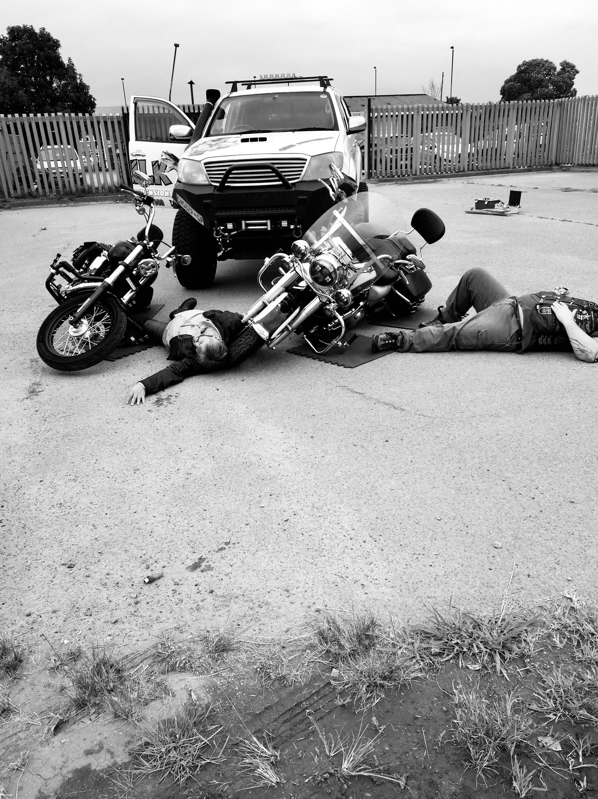
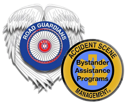

- Duration
- 100 Series one day. 200 Series three hours. 300 Series advanced.
- Prerequisite
- 100 and 200 Series: none. 300 Series: a completion certificate for CPR and the Basic 100 or 200 Series, within the past two years.
- Certification valid
- Refresher recommended every two years
- Awarded by
- Road Guardians International
Accident Scene Management
About this course
Accident Scene Management is a non-profit founded in 1996. Thousands of motorcyclists have trained on the programme, and ASM is now used as a model worldwide. The goals are to reduce injuries and fatalities at crash scenes, reduce rescuer injury, and make EMS more effective by having trained bystanders tend to the injured until professional help arrives.
Who it is for
- Motorcyclists and riding clubs
- Lay rescuers
- EMS workers
- Anyone who rides in a group
What you will learn
- Basic, 100 Series. A Crash Course for the Motorcyclist. One day. Motorcycle trauma basics using P.A.C.T., helmet removal, moving the injured and jaw thrust rescue breathing.
- Refresher, 200 Series. Three hours, hands-on, to maintain or refresh the Basic skills. Complete every two years to stay current.
- Advanced, 300 Series. Roadside medical concerns and assisting EMS on arrival, with hands-on emphasis on P.A.C.T. and the A.B.C.S.S. of trauma.
Worth knowing
The Basic course is not basic
The 100 Series is the most popular course and carries everything needed to respond to a trauma scene. It is aimed at the lay rescuer and works just as well for an EMS worker.
Take Advanced close to Basic
The 300 Series is open only to those who completed a 100 or 200 Series within the past two years, and is best taken soon after.
The accreditation behind it

Accident Scene Management
Road Guardians International
A non-profit founded in 1996, now used as a model for bystander assistance programmes worldwide. Train Pro has held the South African programme since late 2019.
Bystander Assistance Programs
Also consider
Book a course
Send the courseand the headcount
You get dates and a written quote. If you are unsure which course you need, say so and we will tell you which one your role or your site requires.